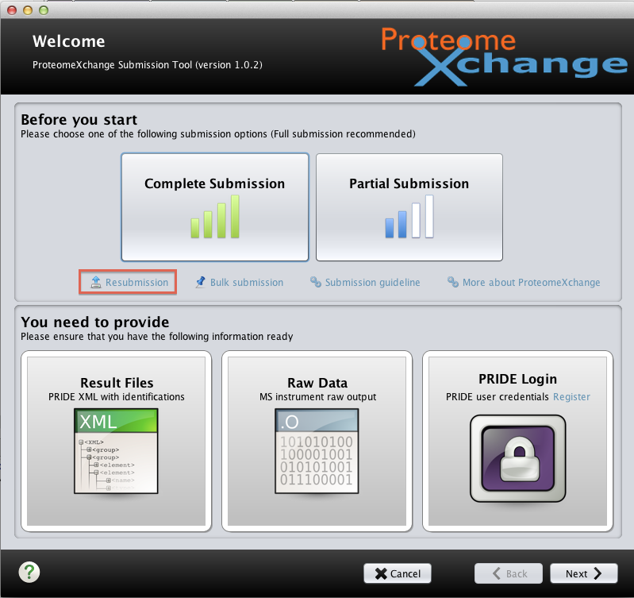
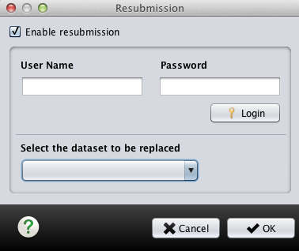

To perform a resubmission, you can click on the "Resubmission" button in the welcome screen of the ProteomeXchange submission tool, as highlighted below. 
You will be prompted with a dialog for you to login and select the dataset to be resubmitted:
